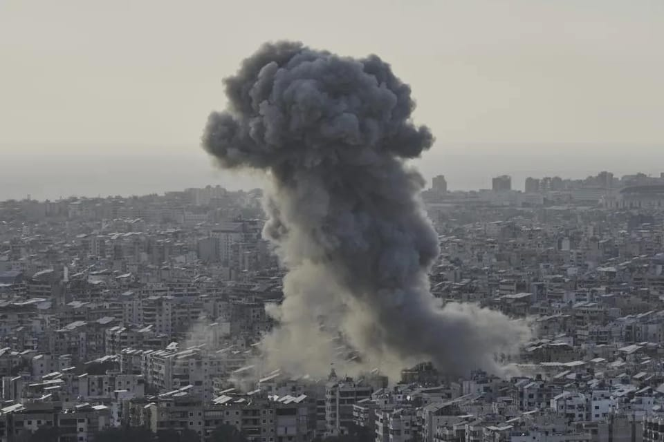

世界苦茶04月28日新闻 | 29条 | 朝鲜宣布在俄作战顺利结束

朝鲜宣布在俄作战顺利结束 | 伊朗港口爆炸已经产生40死 | 中国多地发结婚奖金 | 温哥华汽车冲撞多人死伤
老中世界祛魅
苦茶数据
美元兑人民币：7.29（昨日7.28，前日7.28）
美元兑日元：143.60（昨日143.96，前日142.95）
上证指数：3292（昨日3295，前日3303）
标普500指数：休市（昨日5525，前日5484）
比特币：94375（昨日94416，前日94918）
布伦特原油：67.28（昨日66.87，前日66.88）
中国新闻
• 河北三河强制绿化被点名通报 ：中国官方通报整治形式主义为基层减负典型问题，早前强制全市所有招牌绿化的河北三河市被点名。据央视新闻报道，中央层面整治形式主义为基层减负专项工作机制办公室会同中央纪委办公厅，对三起整治形式主义为基层减负典型问题进行通报，其中一起发生在河北省廊坊市三河市。三河市被指在城市管理中盲目决策、机械执行，损害群众利益，加重基层负担。根据通报，2024年7月以来，三河市个别领导干部政绩观错位、官僚主义严重，未经科学论证和充分征求意见，推动出台《城市规划建设管理导则》，脱离实际提出广告牌匾“除国际国内连锁品牌，不允许用红蓝底色或字样”等禁止性规定。
• 中国审议国家发展规划法 ：中国对国家发展规划专门立法，旨在健全宏观经济治理体系，发挥国家发展规划战略导向作用，推动高质量发展，推进国家治理体系和治理能力现代化。据新华社报道，中国国家发展规划法草案星期天提请十四届全国人大常委会第十五次会议首次审议。国家发展规划法草案共四章31条，主要包括总体要求、国家发展规划的制定、国家发展规划的实施等内容。草案明确国家发展规划由国务院组织实施、国务院负责拟定国家发展规划的主管部门会同国家有关部门拟定实施方案、各地区各部门确定具体工作安排和推进措施。
• 近百名中国人在尼日利亚涉诈被捕 ：逾百名中国人因涉嫌网络诈骗在非洲国家尼日利亚被捕后，当地法院下令扣押73处和他们有关的房产，缴获上千台笔记本电脑。尼日利亚经济和金融犯罪委员会当地时间星期五在社交平台X发布文告称，去年12月10日在一次行动中破获一个涉嫌加密货币投资和恋爱诈骗的团伙。被捕的792名嫌疑人中，至少192人是外国公民，其中148人为中国公民。文告称，拉各斯一法院已下令暂时扣押73处房产，还从这些中国人手中缴获1596台笔记本电脑。其他被扣物品包括数千部手机、数百张双层床和超过400台冷藏箱。 （翻评：尼日利亚都有诈骗园区了？！）
• 多地发结婚奖金促婚育 ：中国去年结婚人数降至45年来新低，多地今年开始发放结婚奖金、红包和消费券等，试图鼓励适龄婚育。据第一财经报道，广州市白云区龙归南岭村日前出台《初婚奖励实施方案（试行）》，规定双方或一方为该村户籍股东成员的初婚夫妻，最高可申领4万元人民币奖金。浙江省政府办公厅今年3月也印发《关于完善生育支持政策体系的若干措施》的通知，鼓励有条件的地区为符合条件的结婚登记对象发放结婚红包、消费券等。
• 罗文嘉析台人在陆被捕七类型 ：台湾民众赴中国大陆后遭逮捕拘留事件频传，台湾海峡交流基金会秘书长罗文嘉说，因诈骗被拘留的占多数，国安罪名、宗教活动等也是赴陆可能面临的风险。综合台湾中央广播电台和《联合报》报道，台湾政府近期不断对外公布民众赴陆涉及人身安全风险的案件，受到外界关注。罗文嘉星期五在记者会上说，海基会归纳出七种类型的民众赴陆被捕样态。罗文嘉介绍，第一种类型是涉及中国大陆的国家安全相关罪名，第二种是涉嫌诈骗等刑事犯罪，第三种至第七种类型分别是从事宗教相关活动、去第三地然后入境中国大陆后失联、对岸说有工作邀约前往后失去人身自由、赴陆看朋友或处理财务问题后失踪、观光或探亲后不明原因失踪。
亚太印太新闻
• 李在明当选韩国民主党总统候选人 ：韩国共同民主党前党首李在明星期天当选第21届总统选举党内候选人。韩联社报道，民主党星期天在京畿道高阳市的韩国国际展览中心公布党内总统候选人初选结果。结果显示，李在明最终以89.77%的得票率位居第一，当选党内总统候选人。该得票率为韩国1987年实现民主化以来，民主党系政党总统候选人选举的最高纪录。
• 亲绿民调显示赖清德满意度下跌 ：台湾政论节目主持人星期六披露据称是亲绿媒体最新民调结果，显示总统赖清德执政表现满意度大跌8.5个百分点，满意度也是自上任后首次低于不满意度。政论节目主持人钱怡君当晚在脸书发布上述民调结果，并说这是《美丽岛电子报》预计星期一发表的民调。钱怡君写道，赖清德的执政表现满意度出现死亡交叉，上任以来，首次不满意大于满意。满意度从3月的55.6%，大跌至4月47.1%；不满意度则从40.6%增至47.3%。
• 陈建仁盼赖清德出席新教宗就职 ：赴梵蒂冈出席教宗方济各丧礼的台湾前副总统陈建仁告诉台湾媒体，他祈祷总统赖清德能出席新任教宗的就职典礼。据路透社报道，被赖清德指派担任台湾特使的陈建仁，星期六接受台湾中央社访问时说，除了希望方济各继续在天上代祷台梵关系愈来愈好，“我还是很盼望，等到新教宗选出，总统赖清德可以代表国家来参加新任教宗的就职典礼，这部分我在弥撒祈祷当中有特别提到”。梵蒂冈是台湾12个邦交国之一，也是在欧洲的唯一一个邦交国。时任总统马英九曾在2013年参加方济各的就职大典。
• 印巴士兵降旗仪式未握手 ：印度与巴基斯坦关系因印控克什米尔地区的恐怖袭击事件急速恶化，两国士兵在边界举行的每日例行降旗仪式上没有握手。60多年来，印度边境安全部队与巴基斯坦游骑兵的安全部队一直遵循惯例，在每天日落之前，于印度旁遮普邦阿姆利则县阿塔里（Attari）与巴基斯坦旁遮普省拉合尔县瓦加之间的边境，举行日常军事表演仪式。例行降旗典礼是两国竞争关系的象征，双方士兵身着典礼军服，在仪式上做出戏剧性的夸张动作，并尽可能高地抬起双腿踢正步。自2010年起，印度和巴基斯坦决定缓和降旗仪式上的敌对氛围，用正式握手和微笑取代以往的敌对手势。
• 美菲举行大规模联合军演 ：美国和菲律宾部队星期天起在菲北部沿海举行“肩并肩”联合军事演习，并将在演习期间发射导弹。法新社报道，今年的演习有多达1万7000人参加，将模拟“全面作战场景”。在马尼拉北部的沿海省份三描礼士省，法新社记者目睹了美国海军陆战队新型MADIS短程防空系统击落两架无人机的场景。
• 巴基斯坦面临经济挑战，寻求中国提供14亿美元贷款： 巴基斯坦联邦财政部长穆罕默德·奥朗则布近日接受一家外国通讯社采访时透露，巴基斯坦已正式向中国申请14亿美元贷款，相当于100亿元人民币。此外，奥朗则布还宣布，巴基斯坦已与国际货币基金组织（IMF）启动一项新的气候融资模式的援助项目。他表示，希望IMF理事会能在5月初批准一项13亿美元的援助项目，并希望一项70亿美元援助项目的首次审查能尽快完成，使巴基斯坦能够获得10亿美元的援助。在经济增长方面，财政部长预测本财年经济增长率将达到3%。他还预测，巴基斯坦下一财年的经济增长率将达到4%至5%，未来几年将达到6%。
科技新闻
• 中国AI产业规模突破7000亿 ：去年，中国人工智能（AI）产业规模突破7000亿元人民币，连续多年保持20％以上的增长率。据中新社报道，《中国人工智能区域竞争力研究报告》星期六在安徽合肥发布。报告显示，2024年，浙江凭借人工智能产业实力提升首次跻身引领者梯队，超越广东、上海、北京位居区域潜力第一。
• 谷歌DeepMind员工拟组工会 ：谷歌 DeepMind 英国的员工正在寻求成立工会，以挑战该公司向国防组织出售AI技术以及其与以色列政府关系相关的决定。据三位听取了相关行动简报的人士透露，这家科技巨头的AI部门由英国诺贝尔奖获得者哈萨比斯爵士领导。最近几周，该部门约有三百名驻伦敦员工试图加入通信工人工会。组建工会的努力源于公司内部日益增长的不满。今年二月，谷歌取消承诺，即不开发造成或可能造成整体伤害的AI技术，包括武器和监控技术。参与工会组建运动的三位人士说，媒体报道称谷歌正在向以色列国防部出售其云服务和人工智能技术，这也引起了不安。
财经新闻
• 特朗普内阁对中美关税说法矛盾 ：特朗普内阁星期天就是否正在与中国就关税问题进行谈判发表相互矛盾的言论。路透社报道，特朗普上周说，他正在与中国就关税问题进行谈判，并已与中国国家主席习近平通话。然而，北京否认正在进行任何贸易谈判。美国财政部长贝森特星期天说，上周在华盛顿参加国际货币基金组织会议期间，他与中国财政部长进行了互动，但并未讨论关税僵局。
• 中国优化离境退税促入境消费 ：中国下调离境退税起退点，中国商务部称，离境退税是吸引和扩大入境消费的重要切入点。据中新网报道，国新办星期天下午举行新闻发布会，介绍优化离境退税政策扩大入境消费有关情况。中国商务部副部长盛秋平介绍，2024年，境外旅客入境消费占中国GDP的比重约0.5%，而世界主要国家入境消费占GDP比重在1%到3%之间，入境消费增长潜力巨大。
• 台湾立法院团访美应对关税 ：由台湾立法院副院长江启臣率领的立院访美团，将出发前往美国，为应对关税冲击说明台湾立场，并争取美国对台军售如期交运。综合台湾《联合报》《自由时报》报道，江启臣星期天晚间率立院外交及国防委员会成员等人士访问美国华府，将拜会美国国会山庄、行政部门及智库，传达台湾产业及民众心声，推动台美合作法案，寻求台美互利互惠双赢局面。除了江启臣之外，国民党立委张智伦、黄健豪，以及民众党立委林忆君将在晚间搭乘同一航班前往。民进党立委王定宇、邱议莹、张雅琳则在隔天出发。
• 中国一季度工业利润增长0.8% ：中国全国规模以上工业企业利润在第一季同比增长0.8%。中国国家统计局星期天在官网公布，1至3月份全国规模以上工业企业利润同比增长0.8%，3月份增长2.6%。早前公布的官方数据显示，今年首两个月则下降0.3%。国家统计局工业司统计师于卫宁说，一季度，各地区各部门着力打好宏观政策“组合拳”，政策效应持续释放，带动工业企业利润由降转增，装备制造业、高技术制造业利润支撑作用明显，工业经济发展质效持续提升。 （翻评：I don’t believe it. ）
• 京东计划三月内招10万骑手 ：京东宣布大规模招聘全职骑手计划，将在未来三个月内招聘10万名全职骑手，首批开放招募的城市超过 130个。承诺为全职骑手提供完整的五险一金保障，平均缴纳额度约为2000元，费用全部由公司承担。骑手还可享受法定福利假期、年假、家礼、体检、带薪病假、爱心基金等多项福利。考虑到新入职骑手的适应期，还将在入职前三个月为达到基本出勤要求的骑手提供至少5000元的保底工资，多劳多得。京东此次招聘计划还特别强调了职业发展通道，表现优异的全职骑手将有机会晋升为骑手副站长、站长等管理岗位，承担更多经验传授和团队管理职责。
• 小米时隔十年重登中国市场第一 ：市场调研机构 Canalys 最新数据显示，今年第一季度，中国智能手机市场出货量达7090万部，受到中国国家补贴政策提振及消费复苏推动，同比温和增长5%，延续了自2024年开启的复苏趋势。其中，小米出货量达1330万部，同比增长40%，在中国国家补贴刺激以及其人车家一体的战略协同下时隔十年重回第一，市场份额19%。华为紧随其后，依旧维持双位数增长，出货1300万部，位列第二。OPPO、vivo分别以1060万部和1040万部的出货量位列第三和第四。苹果在其传统旺季后出现下滑，出货920万部，同比下跌8%，排名第五。分析师指出，小米的重要增长动能来自于产品和渠道的协同效应。
俄乌战争
• 朝鲜中央军委4月27日宣布朝军在库尔斯克的作战胜利结束： 新闻稿说，乌克兰2024年8月“出于逆转劣势战况的险恶居心”占领库尔斯克1200㎢地区。金正恩分析和判定当前战况符合两国《全面战略伙伴关系条约》第四条的行使，决定朝军参战且通报了俄方。根据达成的协议，金正恩下达了与俄军协同作战、歼灭乌纳、解放库尔斯克地区的命令，最终结束了乌克兰对库尔斯克9个月的占领。金正恩表示，将在平壤建立战斗功勋碑，并对参战军人家属采取特别优待和照顾。他并向“取得伟大胜利”的俄国军民以热烈的战斗问候。朝军重申，将继续忠于以朝俄条约精神为基础的任何行动。
• 鲁比奥称美将评估是否继续调解俄乌 ：美国国务卿鲁比奥星期天说，俄罗斯和乌克兰之间需要尽快达成和平协议，特朗普政府将在未来一周内努力确定是否继续充当调解员。路透社报道，鲁比奥在接受美国全国广播公司《会见新闻界》节目采访时说：“这需要尽快实现。如果无法取得成果，我们不会再继续投入时间和资源。”“本周将是非常重要的一周，我们必须确定我们是否继续参与此事，或者说是否应该将注意力集中在其他问题上。”
• 俄称将清除库尔斯克乌军残余 ：一名俄罗斯军事指挥官星期天告诉普京，留在俄罗斯库尔斯克地区的“乌克兰军队残余”将很快被消灭。路透社引述俄罗斯国家通讯社报道，这位指挥官说：“目前，我们已重新夺回并完全控制戈尔纳定居点，并在街道上扎营。”他补充说，俄罗斯军队正在继续清理戈尔纳西部和南部的森林地区。
其他新闻
• 美军空袭也门首都致伤亡 ：也门胡塞武装媒体星期天报道称，美国对也门首都萨那发动袭击，造成两人死亡，数人受伤。法新社报道，据萨巴通讯社报道，在萨那南部的一个街区，“美军袭击了一所房屋，造成两人死亡，一人受伤”。据同一消息来源报道，“美军在阿尔拉乌达西部的一个居民区发动袭击，造成包括两名妇女和三名儿童在内的九人受伤。”
• 法国拟年内撤并三分之一机构 ：法国公共会计部长星期天说，为节省开支，法国政府将提议在年底前合并或撤销三分之一的政府机构。路透社报道，公共会计部长蒙查兰接受法国广播公司CNews/Europe 1采访说：“我们将在今年年底的预算中提议，合并或取消三分之一由国家支持的非高校机构和运营机构。”她说，这样做将节省20亿至30亿欧元。
• 新教宗选举包容外交成关键 ：教宗方济各辞世后，下一任教宗人选受世界瞩目。分析人士认为，在当今日益复杂的形势下，包容视野和外交能力预计成为选出新任教宗的关键因素。法新社报道，方济各的葬礼于星期六举行，他的灵柩安葬在位于意大利首都罗马的圣母大殿。 （翻评：那国务卿可能成为信任教皇啊。）
• 温哥华汽车冲撞多人死伤 ：加拿大不列颠哥伦比亚省温哥华市发生汽车冲撞人群事件，造成多人死伤。加拿大广播公司报道，据温哥华警方通报，当地时间星期六晚上8时左右，一辆汽车在街头节庆活动期间冲入人群，造成多人死亡，另有多人受伤。事发地点位于温哥华东41街与弗雷泽街交汇处，那里当时正举行拉普拉普日街区派对。
• 美伊阿曼核谈判取得进展 ：伊朗与美国4月26日在阿曼首都马斯喀特举行了第三轮间接会谈。伊朗外长阿拉格齐表示，此次会谈较以往更为严肃，已逐步进入更具体的技术性讨论，专家的参与非常有用。他指出，双方在宏观层面和细节问题上均存在分歧。在下轮会谈前，双方将各自进行更多研究，以缩小分歧。阿拉格齐说，会谈氛围严肃而务实，为取得进展带来希望。伊朗方面对谈判的进程感到满意。但他同时强调，伊朗的乐观仍建立在极度的谨慎之上，需要先达成总体共识再讨论细节。此次会谈仅限于核问题，伊朗不会接受将其他议题纳入谈判范围。美国官员表示，会谈“积极且富有成效”。双方还有很多工作要做，但在达成协议方面取得了进一步的进展。双方同意很快在欧洲再次会面。下一轮高级别会谈初步定于5月3日举行。具体地点将由阿曼政府确定并通知双方。
• 加拿大选举自由党民调领先 ：加拿大联邦第45届大选将在星期一登场，两位主要总理候选人展开最后冲刺，自由党总理卡尼的民调支持率保持领先。
• 伊朗沙希德拉贾伊港爆炸事件已造成至少40人死亡、约1000人受伤。总统佩泽希齐扬批评港口管理不善，伊朗最高领袖哈梅内伊要求彻底调查爆炸事件： 伊朗国防部4月27日声明说，在事发地区和整个沙希德拉贾伊港都没有用于燃料或军事用途的进出口货物。关于导弹燃料的报道毫无根据。